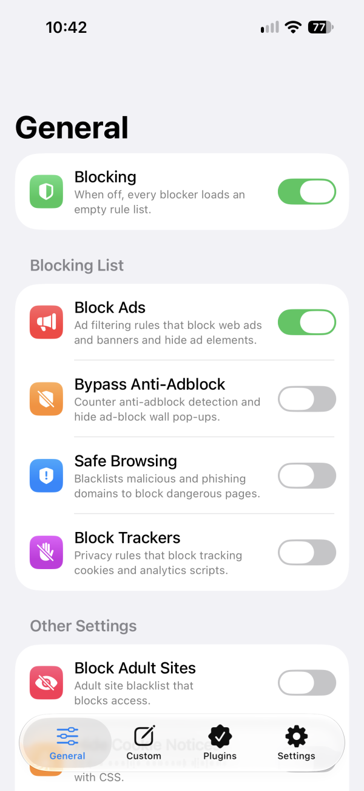

Si vous l’avez configuré sur un iPhone, le chemin est bien connu : Réglages → Apps → Safari → Extensions. Le Mac n’a pas d’étape équivalente dans l’app Réglages. Safari garde ses propres préférences, et tout ce qui concerne les extensions actives se décide à l’intérieur de Safari. L’app AdFence est l’autre endroit, et c’est elle qui contient les interrupteurs qui décident de ce qui est filtré.
Cette séparation est la raison la plus fréquente pour laquelle un Mac peut avoir l’app installée, sembler correctement configuré, et afficher pourtant toutes les publicités. Safari ne fait rien tant que l’extension n’est pas cochée, et la cocher ne change rien à ce qui est filtré tant que les interrupteurs de l’app ne le disent pas.
En bref : dans Safari, ouvrez Safari → Réglages (⌘,) et cochez AdFence dans l’onglet Extensions. Ouvrez ensuite l’app AdFence, restez sur General et vérifiez que Blocking est activé, avec les règles que vous voulez. Rechargez la page.
1. Activer l’extension dans Safari
- Dans Safari, choisissez Safari → Réglages dans la barre des menus (⌘,).
- Ouvrez l’onglet Extensions.
- Cochez AdFence dans la liste de gauche. Les huit extensions apparaissent comme des entrées séparées, chacune avec sa propre case.
- Si vous naviguez en fenêtres privées, cochez Autoriser en navigation privée pour les extensions que vous voulez actives là-bas.

La mention du volet de droite mérite une lecture : un bloqueur de contenu « n’est pas autorisé à lire, modifier ou transmettre le contenu des pages web ». Ce n’est pas une erreur. L’extension fournit des listes de règles ; Safari les applique. C’est ainsi que ce type de bloqueur fonctionne, et c’est pour cela qu’il n’a pas besoin de votre historique.
2. Choisir ce qui est filtré dans l’app
Ouvrez AdFence et restez sur l’onglet General. Blocking, en haut, est l’interrupteur principal ; en dessous, Blocking List regroupe les règles — Block Ads, Bypass Anti-Adblock, Safe Browsing, Block Trackers — et Other Settings juste en dessous celles au niveau de la page, des bandeaux de cookies aux fenêtres surgissantes et aux commentaires. Seul ce qui est activé est filtré.

L’ordre compte. L’app écrit les règles, Safari les applique : après avoir changé un interrupteur, revenez dans Safari et rechargez la page — une page déjà chargée garde le contenu récupéré avant le changement.
Réglages par site sur le Mac
Deux mécanismes se superposent aux interrupteurs globaux, et ils sont faciles à confondre.
- Dans l’app : Site Settings pour une adresse, avec Pause Blocking pour se retirer sur ce site et Site Overrides pour autoriser un seul filtre. Les entrées se rassemblent dans l’onglet Custom.
- Dans Safari : une page peut être rechargée sans bloqueurs de contenu depuis le menu du bouton de rechargement. C’est temporaire et limité à cet onglet — le rechargement suivant ramène le bloqueur.
Le premier est durable ; le second est une porte de sortie. Si vous utilisez souvent le second sur le même site, le premier est le meilleur outil.
Ce qui diffère de l’iPhone
- Le chemin : Safari → Réglages → Extensions sur le Mac, et non Réglages → Apps → Safari. Il n’y a pas d’étape dans l’app Réglages du système.
- L’appareil : les extensions s’activent appareil par appareil. Un Mac et un iPhone ont chacun besoin de leur case une fois ; ensuite, chacun garde ses propres interrupteurs.
- Le navigateur : les extensions Safari ne tournent que dans Safari. Sur le Mac, il est facile de vérifier un site dans Chrome ou Firefox et de conclure que le bloqueur est cassé — il n’y a jamais été appliqué.
Si des publicités apparaissent encore sur le Mac
Vérifiez dans cet ordre — les deux premières étapes règlent la plupart des cas :
- L’extension est cochée. Rouvrez l’onglet Extensions de Safari ; les mises à jour et les migrations de Mac peuvent la laisser décochée.
- L’interrupteur principal est actif. Blocking dans l’app doit l’être ; sinon, chaque extension charge une liste de règles vide.
- Le site n’est pas en pause. Regardez l’onglet Custom de l’app.
- Vous regardez le bon navigateur. Les publicités dans Chrome ou Firefox concernent un autre programme, pas un réglage.
- La publicité est de celles qu’un bloqueur de contenu ne peut pas atteindre. Les annonces dans une vidéo YouTube et les liens ouverts dans le navigateur intégré d’autres apps sont les deux cas habituels.
Si en revanche une page se comporte bizarrement — un lecteur qui ne démarre pas, un formulaire qui ne s’envoie pas —, les outils par site sont la bonne réponse avant tout réglage global. Et si l’extension elle-même semble en cause, la vérification en 30 secondes est dans cet article.
Questions fréquentes
Faut-il l’app sur le Mac en plus de l’iPhone ?
Les extensions s’activent appareil par appareil : le Mac a besoin de l’app installée et de son extension cochée une fois dans Safari. Un iPad aussi. Ensuite, chaque appareil garde ses propres interrupteurs.
Bloque-t-il les publicités dans Chrome ou Firefox sur mon Mac ?
Non. Une extension Safari ne tourne que dans Safari, donc AdFence ne fait rien dans Chrome, Firefox ou tout autre navigateur du Mac. Ces navigateurs ont besoin de leur propre bloqueur.
Fonctionne-t-il dans les fenêtres de navigation privée sur le Mac ?
Seulement si l’extension y est autorisée. Dans les réglages Extensions de Safari, avec AdFence sélectionnée, cochez Autoriser en navigation privée pour chaque extension que vous voulez active dans les fenêtres privées.
Safari dit que l’extension n’a pas l’autorisation de lire les pages. Est-ce normal ?
Oui. Un bloqueur de contenu fournit des listes de règles que Safari applique lui-même ; il ne lit, ne modifie ni ne transmet le contenu des pages. Cette phrase dans le volet Extensions décrit le fonctionnement de la technologie, pas une erreur.
Pourquoi un site affiche-t-il encore des publicités sur mon Mac ?
Vérifiez ce site dans Site Settings : s’il a été mis en pause pour une raison quelconque, il le reste jusqu’à sa suppression. Les publicités dans un flux vidéo et celles du navigateur intégré d’autres apps sont des cas à part qu’aucun bloqueur de contenu Safari ne peut atteindre.